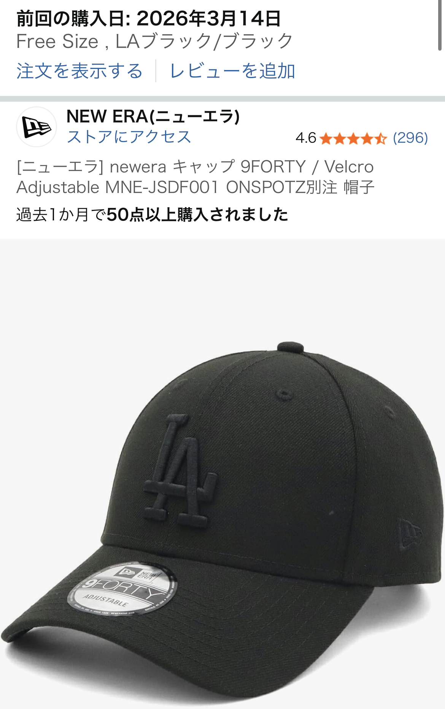

ニューエラ LAブラック/ブラックキャップをレビュー【ロゴ控えめで大人が使いやすい定番帽子】
※本記事にはアフィリエイトリンクが含まれます。リンク経由で購入いただいても、読者さまの負担額は変わりません。

ニューエラは「帽子メーカーとして買っておけば間違いない」定番ブランド
キャップ選びで迷ったときに、まず候補に挙がるのがニューエラ（NEW ERA）です。メジャーリーグの公式キャップを手がけるブランドとして知られ、ストリートからきれいめカジュアルまで幅広いスタイルに溶け込みます。
実際に「帽子はニューエラ買っておけばOK」と感じている人も多く、キャップメーカーとしてのシェアも高い定番ブランドです。
今回取り上げるのは、LAブラック/ブラックという、ロゴが黒で統一されたモデル。派手さを抑えつつ、さりげなくブランド感を楽しめる「大人向けキャップ」として非常にバランスが良いと感じました。
口コミ：ロゴが黒塗りで目立たないのが「ちょうどいい」
参考にした口コミでは、星5つ中5つの高評価。
「ロゴが黒塗りで目立たず、私的には好みなキャップです！ニューエラのロゴも黒で統一されています。」という声があり、ロゴの主張が控えめな点が特に評価されていました。
一般的なニューエラのキャップは、サイドのフラッグロゴが白で入っているモデルも多く、コーデによっては「ちょっとスポーティに寄りすぎる」と感じることもあります。その点、LAブラック/ブラックはロゴが黒で統一されているため、ロゴの存在感はあるのに、悪目立ちしないのがポイントです。
きれいめシャツやシンプルなTシャツ、モノトーンコーデとも相性が良く、「キャップをかぶりたいけれど子どもっぽく見せたくない」という人に向いたデザインだといえます。
中段まとめ：大人カジュアルに合わせやすい万能キャップ
実際の口コミとブランドの特徴を踏まえると、LAブラック/ブラックは次のような人に特に向いています。
- ロゴは好きだけれど、主張しすぎるのは避けたい人
- モノトーンやシンプルな服装が多い人
- 「とりあえず失敗しないキャップ」が1つ欲しい人
メジャーリーグ公式キャップを手がけるニューエラの安心感もあり、初めてのキャップとしても選びやすいモデルです。以下のボタンから商品ページを確認できます。デザインや在庫状況、価格などは必ず最新情報をご自身でご確認ください。
デメリット：オールブラックゆえの「物足りなさ」とサイズ感の注意点
一方で、LAブラック/ブラックならではのデメリットもあります。まず、ロゴが黒で統一されているぶん、写真映えはやや控えめです。白ロゴモデルと比べると、SNSや写真で見たときの「ニューエラ感」は少し弱く感じるかもしれません。
また、今回の口コミではフリーサイズが選ばれていましたが、キャップ全般にいえることとして、頭の形や髪型によってフィット感は変わります。後ろのアジャスターで調整できるとはいえ、 「きつく締めすぎると長時間かぶったときに頭が痛くなる」「ゆるくしすぎると風で飛びやすい」といった点には注意が必要です。
これはあくまで一般的な傾向であり、実際のかぶり心地は個人差があります。可能であれば、同じシリーズのキャップを店頭で試着してサイズ感のイメージをつかんでおくと安心です。
他ブランドのキャップと比較したときのニューエラの強み
他のキャップブランドと比べたとき、ニューエラの強みはやはり形の安定感とブランドとしての信頼性です。メジャーリーグの公式キャップを長年手がけているだけあり、ツバのカーブやクラウンの高さなど、シルエットが洗練されています。
ファストファッション系のキャップと比べると価格はやや高めですが、その分、シルエットのきれいさとコーデ全体のまとまりやすさは一段上という印象です。「帽子はニューエラを買っておけばOK」と言われるのは、このあたりのバランスの良さが理由のひとつでしょう。
もちろん、すべての人にとって絶対の正解というわけではなく、好みや頭の形によって合う・合わないはあります。ただ、1つ目の“ちゃんとしたキャップ”として選ぶなら、ニューエラのLAブラック/ブラックはかなり有力な候補になると感じます。
まとめ：ロゴ控えめで長く使えるニューエラの定番キャップ
ニューエラ LAブラック/ブラックキャップは、ロゴが黒で統一された控えめなデザインと、メジャーリーグ公式キャップメーカーとしての信頼感を両立したモデルです。派手すぎないのに、しっかりと「ニューエラらしさ」を感じられるのが魅力です。
デメリットとしては、ロゴの主張が弱いぶん「もっと分かりやすくブランドを見せたい」人には物足りない可能性があること、サイズ感は頭の形によって合う・合わないが出やすいことが挙げられます。ただし、これらはあくまで一般的な傾向であり、最終的な満足度は個人の好みや使用シーンによって変わります。
シンプルなモノトーンコーデや大人カジュアルに合わせやすいキャップを探しているなら、LAブラック/ブラックはチェックしておいて損のない選択肢です。詳細な仕様や最新価格、在庫状況は、必ず商品ページでご確認ください。
※リンク先の価格・在庫・仕様は変更される場合があります。購入前に必ず最新情報をご確認ください。